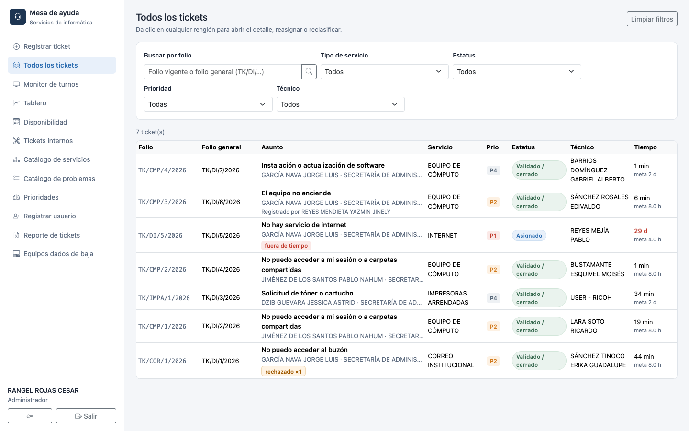
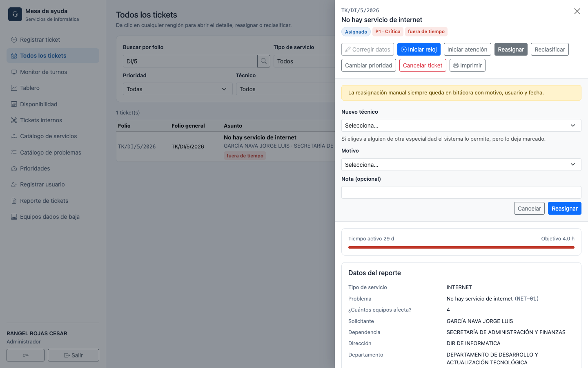
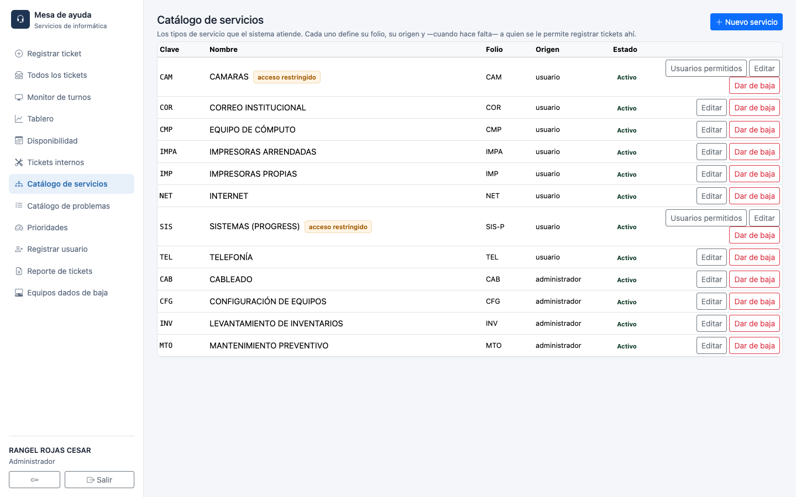
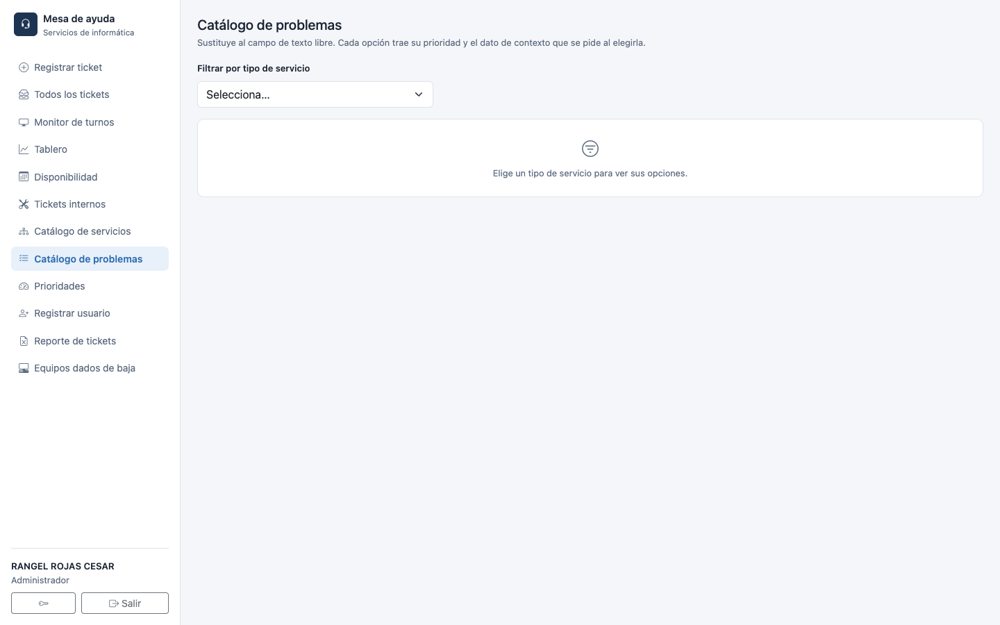
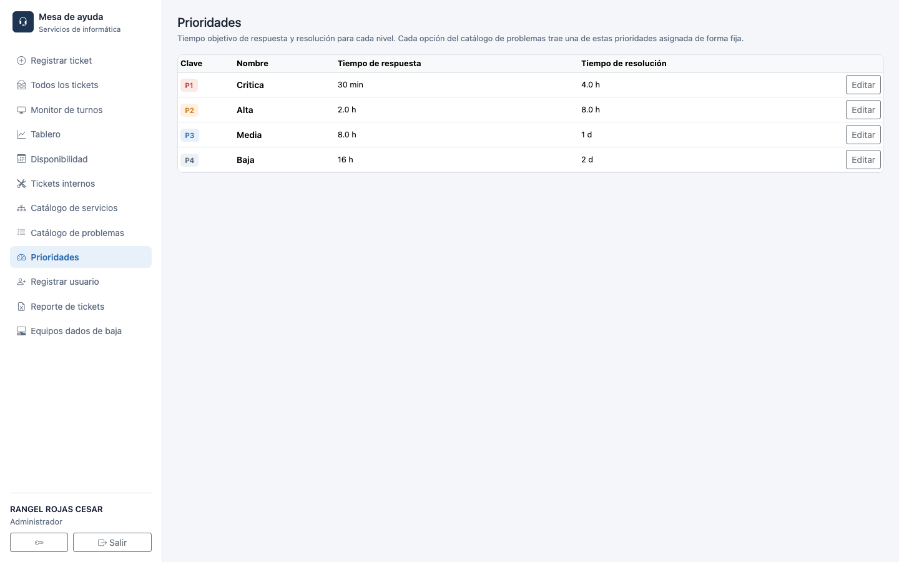
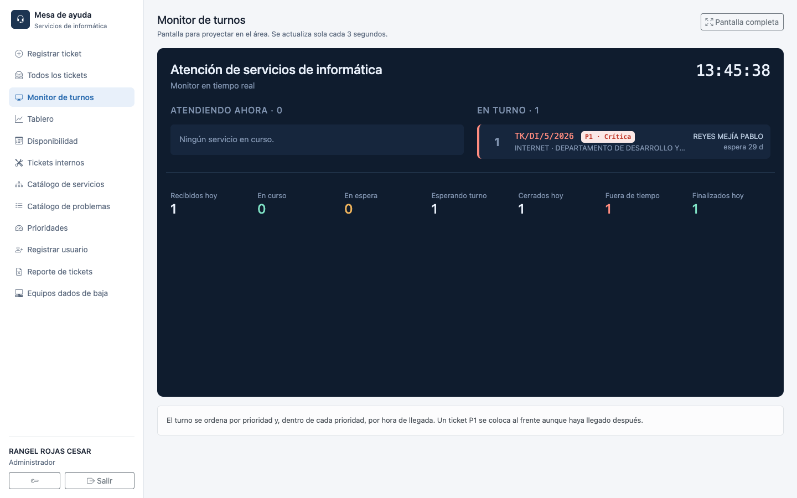
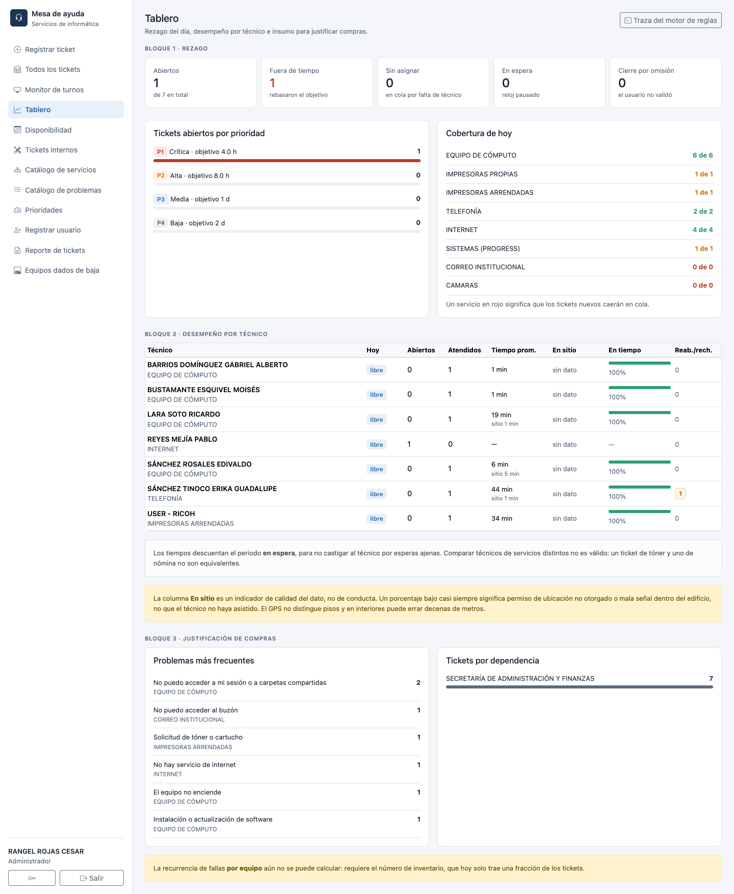
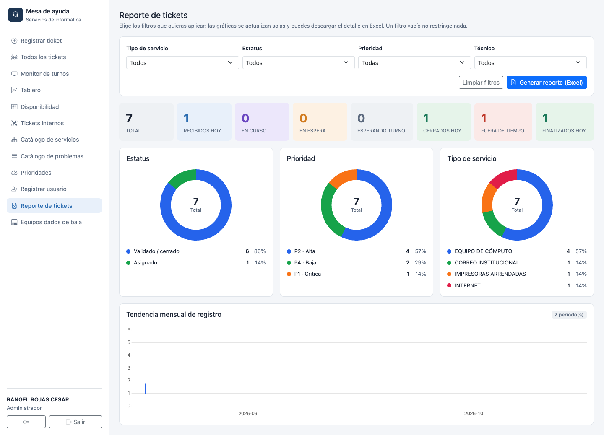
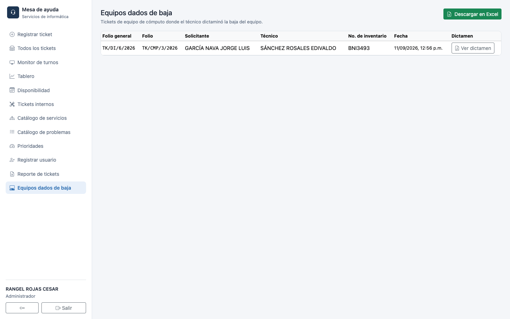
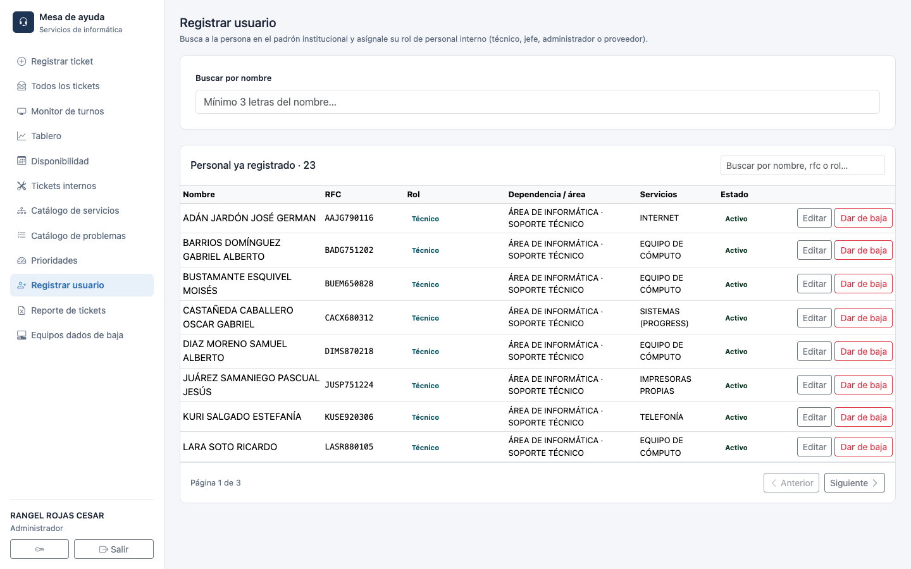

MESA DE AYUDA
Manual del Administrador
Catálogos, gestión de tickets, tiempos de técnicos, reportes y gráficas
Secretaría de Administración y Finanzas · Congreso del Estado de México
El administrador ve todas las opciones del sistema: registrar y consultar tickets, los tres catálogos, los paneles de seguimiento, los reportes y la gestión de usuarios.
A diferencia de los demás roles, el administrador (y el operador) ven todos los tickets del sistema, no solo los propios o los turnados.

Da clic en cualquier renglón para abrir el ticket. Ahí, además de las acciones que ya conoces del técnico, el administrador tiene disponibles:

Reclasificar cambia el ticket a un problema distinto (incluso de otro servicio) cuando el reporte original no era el correcto — el ticket conserva su historial, pero el sistema anota que fue reclasificado. Cambiar prioridad ajusta la urgencia manualmente, con motivo obligatorio, para los casos donde el catálogo no refleja la urgencia real.
Cancela el reporte sin generarle un folio de servicio — se mantiene únicamente con su folio general. Úsalo para reportes duplicados o que ya no aplican.
Aquí se define qué tipos de servicio existen, con qué prefijo de folio, quién los puede registrar y si están activos.

| Campo | Qué significa |
|---|---|
| Origen: usuario | Cualquier solicitante lo puede elegir al registrar un ticket (salvo que esté restringido — ver abajo) |
| Origen: administrador | Solo se usa desde "Tickets internos", no aparece en el formulario del solicitante |
| Acceso restringido | Solo las personas de la lista de "Usuarios permitidos" de ese servicio pueden registrar ahí (por ejemplo CÁMARAS o SISTEMAS) |
| Dar de baja | Desactiva el servicio sin borrar su historial — deja de aparecer como opción nueva |
Cada servicio tiene su propia lista de problemas; cada problema trae ya decidida su prioridad y si pide un dato adicional (número de inventario, nombre del programa, etc.).

Las cuatro prioridades (P1 Crítica a P4 Baja) definen el tiempo objetivo de respuesta y de resolución que usa todo el sistema — el tablero, el monitor y los reportes de "fuera de tiempo" se calculan contra estos valores.

Pantalla pensada para proyectar en el área de informática: se actualiza sola cada 3 segundos, sin que nadie tenga que recargarla.

El Tablero es la vista más completa para supervisión: rezago del día, desempeño por técnico, y los datos que respaldan una solicitud de compra o de refuerzo de personal.

Abiertos, fuera de tiempo, sin asignar, en espera y cierres por omisión del día — y, aparte, los tickets abiertos agrupados por prioridad.
Por cada técnico: cuántos tickets tiene hoy, cuántos abiertos, cuántos ha atendido, su tiempo promedio, el porcentaje de tickets resueltos en tiempo, y sus reaperturas/rechazos. El tiempo descuenta el periodo en espera, para no castigar al técnico por esperas ajenas a él.
Problemas más frecuentes y tickets por dependencia — el respaldo cuantitativo cuando se necesita justificar una compra de equipo o insumos ante otra área.
Esta pantalla combina un vistazo visual inmediato con la posibilidad de bajar el detalle completo para trabajarlo aparte.

Lista concentrada de todos los tickets de Equipo de cómputo donde el técnico dictaminó la baja del equipo, con acceso directo a cada dictamen en PDF.

El botón Descargar en Excel exporta la misma tabla (sin el PDF del dictamen, que se descarga aparte por caso) — útil para entregarle al área de Bienes Muebles la relación completa de bajas de un periodo.
Da de alta al personal interno del sistema: técnicos, jefes de departamento, operadores, gestores y proveedores externos. Los solicitantes no se dan de alta aquí — cualquier persona del padrón institucional ya puede entrar como solicitante con su RFC.

Desde la misma lista puedes Editar a alguien ya registrado (cambiar su rol o sus servicios) o Dar de baja su acceso sin perder su historial de tickets atendidos.
El operador ve y opera lo mismo que el administrador en el día a día (todos los tickets, reasignar, monitor, tablero, reportes), pero no administra catálogos ni usuarios.
Sí — administrador, operador y gestor pueden elegir "Registrar a nombre de" y buscar a cualquier persona activa del padrón.
Los tickets ya existentes no se ven afectados; el servicio simplemente deja de estar disponible para registrar tickets nuevos.
La bitácora dentro del detalle del ticket registra cada movimiento con fecha, usuario y motivo (cuando aplica) — incluyendo reasignaciones, cambios de prioridad y reclasificaciones.